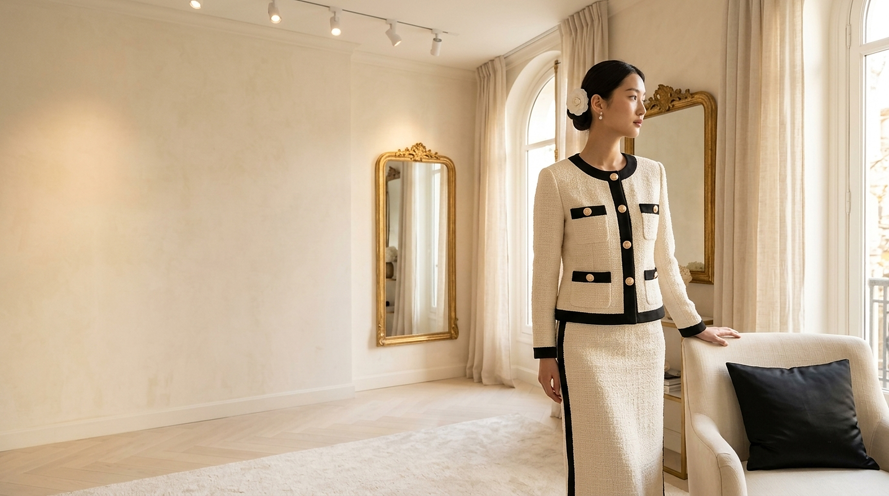

Quatre Chapitres
메종의 SS27 — 챕터별 보기
Sélection de la Saison
SS27 — 가장 자주 거론된 8 룩
L'Edit · The SS27 Edit
« Une seule veste, douze mois de l'année. »
SS27의 한 점만 골라야 한다면 — 메종은 망설임 없이 Le Tweed Doré를 권합니다. 봄에는 크림 실크 캐미솔 위로, 여름에는 슬리브를 살짝 걷어올리고, 가을에는 매칭 펜슬 미디 스커트와 함께, 겨울에는 블랙 캐시미어 터틀넥 위에 — 한 점이 사계절을 책임지는 옷입니다.
If you must choose one piece from Spring/Summer 2027, the maison would, without hesitation, suggest Le Tweed Doré. The flagship jacket has been in the maison's atelier in essentially the same silhouette since October 1948.
Discover Le Tweed Doré →La Collection Complète
« 32 looks. 4 chapitres. Un seul fil d'or. »
32개의 룩, 4개의 챕터, 그리고 한 가닥의 황금실
Explore the Full Collection →